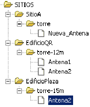
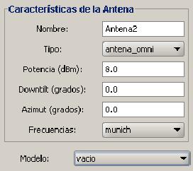

Siguiente: Estimación de potencia mediana
Subir: Descripción general de SAPO
Anterior: Ingreso de datos del
Índice General
Creación de una red celular
El segundo requerimiento para poder realizar un cálculo de
atenuación es disponer de la topología y características de la red
celular. Las antenas trasmisoras dentro de una red pueden poseer similares
características, por ejemplo, muchas de ellas pueden tener el mismo
patrón de radiación. Lo mismo sucede con los canales de frecuencia,
se repetirán a lo largo de la red gracias al reuso de frecuencias.
No sería práctico tener que ingresar reiteradas veces la misma información al sistema, sobre todo pensando en que
SAPO pretende poder ser usado para redes de cualquier
porte. Es por esto que el software está diseñado de forma que el
usuario ingrese cierta información y la tenga luego disponible para
su uso dentro del proyecto. Esta información incluye:
- Tipos de antena. Pueden ingresarse antenas isotrópicas o
direccionales. En este último caso, se especifica la ganancia en la
dirección de máxima propagación y los datos del patrón de radiación,
tanto el horizontal como el vertical (tabla de ángulo y su
respectiva ganancia, relativa a la ganancia máxima). Estos datos
pueden ser también importados desde un archivo de texto (ver sección
9.4). Para el cálculo de la ganancia en ángulos
que no están especificados en el patrón se utiliza interpolación
lineal.
- Canales de frecuencia. Se especifica el grupo de frecuencias
asignado para los canales de comunicación. Si bien para los cálculos
de atenuación se usará la frecuencia mayor (criterio conservador),
es necesario conocer todas las portadoras a fin de hacer un análisis
de posible interferencia co-canal con otras radiobases (válido para sistemas FDMA).
- Modelos de propagación. El usuario es capaz de crear un
modelo de pérdida de camino basado en una lista de modelos
preestablecidos, a los cuales les puede asignar los valores de los
parámetros que los definen. Esto permite crear diferentes
implementaciones de un mismo modelo, ajustando sus parámetros a las
necesidades del proyecto, aunque siempre está disponible la opción
de dejar los valores por defecto. Los modelos con los que cuenta
SAPO son:
- Pérdidas de vacío (ver sección 3.1)
- Propagación en tierra plana (ver sección 3.2.2)
- Propagación en tierra plana aproximada (ver sección 3.2.2)
- Modelo Okumura-Hata COST231 (ver sección 5.1.3)
- Modelo de Erceg-SUI (ver sección 5.2)
- Modelo COST231 Walfisch-Ikegami (ver sección 5.3.2)
- Modelo MOPEM (ver sección 5.3.3)
- Modelo propuesto: Vogler-Ikegami (ver sección 5.4)
Los distintos modelos cubren la mayoría de los escenarios de
propagación. Los tres primeros sirven principalmente para chequeos
básicos porque son modelos muy elementales. Luego, para casos de
entornos preferentemente suburbanos en donde no se posea la
información de las edificaciones están disponibles los modelos de
Okumura-Hata y de Erceg. Los restantes modelos pueden aplicarse a
regiones urbanas, si se dispone de la base de datos detallada del
entorno. El usuario debe tener en cuenta las hipótesis que
cualquiera de dichos modelos asumen y el rango de validez de los
parámetros, a fin de elegir el que más se adecúe a su caso
particular de estudio. Por ejemplo, el modelo COST231
Walfisch-Ikegami debería aplicarse en un entorno urbano con pocas
variaciones de altura de terreno, altura de edificaciones homogénea
y radiobase por encima del nivel medio de edificaciones.
SAPO permite crear una red celular de cualquier porte,
es decir, compuesta por un número arbitrario de sitios. El concepto
de sitio es el de un punto del mapa (identificado por sus
coordenadas) capaz de alojar una o más radiobases. Es necesario
contar con los datos de altura de terreno para poder ingresar un sitio. El
concepto de radiobase en este contexto vendría a ser esencialmente
el de una torre, que se caracteriza por tener una determinada altura y
contener un sistema radiante. Cada radiobase puede albergar una cantidad
cualquiera de antenas (sectores).
Para ingresar una antena al proyecto es imprescindible disponer de al menos un tipo
de antena, un canal de frecuencias y un modelo de propagación, para poder ser asociados
a la nueva antena. Además se deben especificar otros parámetros como es la potencia
de trasmisión y los ángulos de tilt y azimut. Vale la pena detenerse en el hecho de
que cada antena de la red tenga asociado un modelo de propagación. Esto implica que
se podrán realizar predicciones con varios modelos a la misma vez, lo que le da a
SAPO una gran flexibilidad, a diferencia de la mayoría de los paquetes de
software existentes que establecen un único modelo de predicción para toda la red. Esto
es muy útil por ejemplo, en casos donde las características del entorno sean heterogéneas
a lo largo del territorio.
Figura 7.2:
Ubicación de una antena en el contexto de una red y
parámetros que la definen
|


|
A medida que el usuario va añadiendo elementos al proyecto, un
listado de los mismos aparece en un panel ubicado en la parte
izquierda de la pantalla, denominado explorador (ver figura
7.1). Consiste básicamente en un grupo de nodos
dispuestos en forma de árbol que permiten al usuario tener una
visión general de la información ingresada y navegar a través de
ella. Puede contener hasta tres pestañas, en la primera de ellas
figura la estructura de sitios, radiobases y antenas que forman la
red celular; en la segunda aparecen los tipos de antenas y los
canales de frecuencia; y en la tercer pestaña se listan los modelos
de propagación que han sido creados para el proyecto. Cada uno de
los elementos anteriormente mencionados se representa en el
explorador mediante un nodo con el nombre que asignó el usuario al
momento de crearlo; el nombre actúa como identificador único, por lo
cual no debe repetirse dentro del proyecto (la interfaz no lo
permite). Si el usuario posiciona el ratón en cualquier nodo y hace
un click con el botón derecho del mismo, se le abre una gama
de posibilidades como por ejemplo la de editar la información
relativa al elemento asociado con dicho nodo o borrarlo. Por otro
lado, en el mapa figura la disposición de los sitios a lo largo del
terreno.
Siguiente: Estimación de potencia mediana
Subir: Descripción general de SAPO
Anterior: Ingreso de datos del
Índice General
SAPO